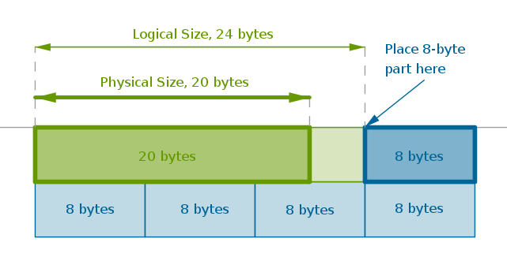

An integral is a part that is permanently embedded in its whole. An integral part's life time is equal to that of it containing whole. A whole and all of its integral parts exist in one contiguous memory block. They are created, constructed, destructed and deleted as one and at the same time.
An integral part may be implemented as a Handle or as an ADT. A whole containing such integral parts can also be implemented as a Handle or as an ADT. However, because we will use ADTs exclusively in the rest of this text we will only look at the integral parts that are ADTs. You are encouraged to experiment with Handles yourself.
The integral parts consequences:
Commentary
An ADT whole and all of its integral ADT parts should be placed in one contiguous memory block. For ADT mechanism to work a whole has to be placed in this memory block first. All the integral parts should be placed in a non-overlapping sequence at memory addresses that follow the address of the whole. If a given processor architecture requires a proper alignment then the parts should be placed at the appropriate addresses, see below.
An ADT implementation as a C structure guarantees the presence of at least one pointer to a function in it as the first member. If all the integral parts of an encapsulated whole are exclusively ADTs it may be argued that there may be no need for manual alignment - placing ADTs one after another in a given memory block may work because several function pointers as first members of a C structure are a strong alignment requirement as is and it may provide ample room and proper alignment for the consecutive ADTs.
If the above statement is not true and manual alignment of parts can not be avoided then the reasoning for one practical way to proceed runs as follows.
We observe that a given C compiler possesses all the alignment knowledge needed to assemble fully functional code for a given operating system and for the given processor type. When such compiler builds and sizes a C structure it has to consider one of the requirements of the host programming language that:
any complete data type - whether native or custom - may be used in a C array which may not have unused space - holes - in between its elements
From the above observation we infer that after a C compiler is done with a C structure its size:
- is minimal in order to not waste space
- accommodates the placement of structure's members at such addresses that a given processor can read from and write to any of them in any structure - regardless of this structure's position within the array
It follows then that the above behavior may be used to build up an array-like formation of integral parts within the memory block associated with the whole. The C structure that is placed first - a whole - does not need to be aligned manually since calloc() guarantees to always return a properly aligned address. For brevity let us call this structure "current".
The first integral part that follows this "current" structure must be aligned manually. Let us call that structure "next". To properly align the "next" structure relative to the "current" one we shall adjust the logical size of the "current" structure to be an exact "just greater" multiple of the size of the "next" one.
The above size adjustment is done entirely at run time by the typeSizeOf() function associated with the "current" structure and is thus purely logical - not physical. Artificially sized that way the "current/next" pair of structures simulates a C array of "next" structures and should always work regardless of compiler, operating system and processor types.
For a hypothetical example let us assume that the "current" structure is \(20\) bytes long and that the "next" structure is \(8\) bytes long. We logically inflate the size of the "current" structure at run time to look like it is \(8\times 3 = 24\) bytes long. We then place the \(8\)-byte structure right after the "\(24\)-byte structure". This placement emulates a C array of four \(8\)-byte elements. The first three elements are fake and in sum they are large enough to accommodate the "current" structure in its entirety. The next element - number four - is somewhat real:
It should be understood that even though we refer to the above structures as elements of C arrays in reality these structures will not be referenced as such. We use the C array notation here solely as a vehicle to justify and explain this alignment technique.
Now that we know how to align two structures we can extend the described approach to an arbitrary number of them. To align the consequent integral part we make the just aligned "next" structure "current" and repeat the above process for that part. And the next. And the next. Until all the integral parts are aligned.
The consequences of this alignment approach, which should pass the ANSI C muster, are:
1) There is no need to write processor-specific alignment code.
2) Because sizes of C structures are for the most part arbitrary and can not be controlled gaps in a memory block around the integral parts are all but inevitable. Exaggerating for demonstration purposes, placing a \(199\)-byte structure after a \(3\)-byte structure wastes \(196\) bytes. Switching these structures around, if at all possible, wastes \(2\) bytes.
It is tempting to programmatically sort the integral parts on their size in descending order. However, the SizeOf() and Construction() functions for all the integral parts in this case must follow some uniform convention. We will shy away from this approach here.
3) If an integral part is a variable of some type of Factory (see the creational patterns chapters) and there is a need to change this variable's type at run time - during the life of a whole - then, theoretically, the only safe way to do so is to replace the existing Factory-like variable with a new one of smaller or equal size to avoid the resizing of the memory block containing the whole.
This, however, is not practical. So for all practical purposes if there is a need to change the type of an integral Factory-like variable at run time a whole containing it must be deleted from memory and a new one created. Consider the non-integral types of parts if this is an issue (see the next chapter).
To deduce the formula for the size adjustment the following assumptions are taken to be true. The sizes of C structures are whole positive non-zero integers. Because of the way ADT works the C structure that implements it is guaranteed to have at least one member - a pointer to a function. Consequently, an ADT's smallest size is the size of one function pointer.
By definition an integer \(M\) is a multiple of another integer \(I \neq 0\) if there exists yet another integer \(n\) such that:
$$M = n \times I$$In number theoretic parlance we would say that \(M\) is divisible by \(I\) or that \(I\) divides \(M\), symbolically \(I | M\). Solving the above equation for \(n\) we obtain:
$$n = \frac {M}{I}$$To translate this equation into the structure size adjustment we replace \(M\) with \(CurrSz\) and \(I\) with \(NextSz\) since the current size has to be made a "just greater" multiple of the next size:
$$n = \frac {CurrSz}{NextSz}$$The above formula yields the number of times \(NextSz\) folds into \(CurrSz\), where \(CurrSz\) is the size of the "current" structure in need of logical adjustment and \(NextSz\) is the size of the "next" structure in need of alignment.
Since the above arithmetic division translates conveniently into integer division in computing, to find the "just less" multiple \(jlm\) of \(NextSz\) with respect to \(CurrSz\) we multiply \(n\) by \(NextSz\):
$$jlm = n \times NextSz = \frac {CurrSz}{NextSz} \times NextSz$$To find the "just greater" multiple \(jgm\) we add \(NextSz\) to \(jlm\):
$$jgm = jlm + NextSz = \frac {CurrSz}{NextSz} \times NextSz + NextSz$$The reason a multiple in "just greater" must be "greater" is to make sure that structures do not overlap in memory at run time. The reason this multiple is "just" is to make sure that memory is not wasted beyond bare minimum.
The above formula is implementable in C already. However, there is one optimization we can make. We observe that when \(CurrSz \equiv NextSz = K\) the gap between the adjacent structures is \(K\). To eliminate that gap we want the first term of the formula to vanish exactly when \(CurrSz \equiv NextSz\). We achieve this by subtracting one from \(CurrSz\) which is permissible because of the original assumptions - C structures are at least one byte long and for ADTs that number (size) will be more than one:
$$jgm = \frac{CurrSz - 1}{NextSz} \times NextSz + NextSz$$To make the above symbols more readable we replace \(jgm\) with logicalSize() in C. The current address is the address of the current structure. The current size is its size. The next size is the size of the structure to be aligned:
extern size_t logicalSize( size_t currsz, size_t nextsz ) { size_t logicalsz = ( ( currsz - 1 ) / nextsz ) * nextsz + nextsz; return logicalsz; } extern size_t paddingAmount( size_t currsz, size_t nextsz ) { size_t logicalsz = logicalSize( currsz, nextsz ); size_t pad = logicalsz - currsz; return pad; } extern void* nextAddress( void* curradrs, size_t currsz, size_t nextsz ) { size_t logicalsz = logicalSize( currsz, nextsz ); void* na = ( unsigned char* )curradrs + logicalsz; return na; }
Sample Problem
Make str_t ADT - book's title - a private integral part of book_t ADT.
Generic Solution Description
1) Implement a whole as suggested in ADT chapter. Add one pointer to an integral part for each and all such parts in the whole's implementation data type.
2) Create the whole and all of its integral parts in one memory block at the same time. Place the whole in memory first. Place the integral parts after the whole in an order you wish, aligning these parts if needed.
3) Modify the whole's SizeOf(), Construct() and Destruct() functions to size, construct and destruct all the integral parts absorbed by this whole.
4) In the whole's SizeOf() function account for the size of the whole, the sizes of all of the integral parts and the size of the extra space needed to align each integral part, if any.
5) In the whole's Construct() function place that whole in memory first. Place all the integral parts after the whole in a non-overlapping sequence aligning them if needed. Set the pointers to all of the integral parts and call a construction function for each part.
6) In the whole's Destruct() function call a destruction function for each integral part first and then destruct the whole itself.
Sample Solution Implementation
Step 1
Borrow str_t ADT from the corresponding chapter by copying the libstr.h header file and the libstr.so shared library into the current working directory, for example.
Step 2
Implement book_t ADT in a libbook.[hc] pair of files.
We will give book_t the ability to print information about itself that is relevant to the current discussion.
libbook.h:
#include <sys/types.h> typedef struct book { void ( *info )( struct book* ); } book_t; extern book_t* bookNew( const char* ); extern void bookDelete( book_t** ); extern book_t* bookConstruct( void*, const char* ); extern void bookDestruct( book_t* ); extern size_t bookSizeOf(); extern void bookInfo( book_t* );
Step 3
Define the book's implementation data type bookimpl_t in a private implementation file libbook.c adding one pointer to str_t to that data type.
libbook.c:
#include <stdio.h> #include <stdlib.h> #include "libbook.h" #include "libstr.h" typedef struct { book_t bookadt; str_t* title; /* Pointer to an integral part. */ } bookimpl_t; static void bookInfoImpl( book_t* ); static book_t bookAdt = { bookInfoImpl };
Step 4
In practice logicalSize(), paddingAmount() and nextAddress() family of functions will normally be packaged into a separate reusable library. However, for demonstration purposes and to avoid the clutter we will place these functions into the libbook.c file.
Step 5
In bookSizeOf() calculate and return a size big enough for the whole and for all of its integral parts. Include: the size of the bookimpl_t structure plus the size of str_t as returned by strSizeOf() plus an extra space to align one str_t properly.
libbook.c:
extern size_t bookSizeOf() { size_t rv; rv = sizeof( bookimpl_t ) + paddingAmount( sizeof( bookimpl_t ), strSizeOf() ) + strSizeOf(); return rv; }
Step 6
In bookNew() allocate enough space to hold the entire encapsulated whole with all of its integral parts and then call bookConstruct().
Make bookNew() and bookConstruct() accept all the information required to create its integral part - book's title - in addition to any information needed to create the book variable itself, if any.
libbook.c:
extern book_t* bookNew( const char* title ) { book_t* book = ( book_t* )NULL; void* mem = calloc( 1, bookSizeOf() ); book = bookConstruct( mem, title ); return book; }
Step 7
In bookConstruct() place an integral part in the memory block allocated by bookNew() at the appropriate address by calling nextAddress() with correct arguments.
The first argument to nextAddress() in this case is where bookimpl_t is placed or mem.
The second argument is the size of bookimpl_t as returned by C's unary operator sizeof - not the return value of bookSizeOf().
The third argument is the size of str_t as returned by strSizeOf().
Model bookConstruct() after bookSizeOf(). Assign the addresses to the integral parts in the same order bookSizeOf() uses them to calculate the amount of space needed for the whole.
libbook.c:
extern book_t* bookConstruct( void* mem, const char* title ) { void* adrs; bookimpl_t* bimpl = ( bookimpl_t* )mem; bimpl->bookadt = bookAdt; adrs = nextAddress( mem, sizeof( bookimpl_t ), strSizeOf() ); /* Construct the integral part. It is possible because str_t's construction is a public interface. */ bimpl->title = strConstruct( adrs, title ); /* Construct the whole and return it. */ return &bimpl->bookadt; }
Step 8
In bookDestruct() dismantle all the integral parts first, then destruct the whole.
libbook.c:
extern void bookDestruct( book_t* book ) { bookimpl_t* bimpl = ( bookimpl_t* )book; /* Destruct the integral part first. It is possible because str_t's destruction interface is public. */ strDestruct( bimpl->title ); /* Then - destruct the whole. */ }
Step 9
Implement bookDelete().
libbook.c:
extern void bookDelete( book_t** book ) { if ( !book && !*book ) { return; } bookDestruct( *book ); free( *book ); *book = ( book_t* )NULL; }
Step 10
Implement bookInfo() and bookInfoImpl() to print the information of interest.
libbook.c:
extern void bookInfo( book_t* book ) { book->info( book ); } static void bookInfoImpl( book_t* book ) { bookimpl_t* bimpl = ( bookimpl_t* )book; printf( "%s:%d: bookInfoImpl()\n", __FILE__, __LINE__ ); printf( " bookSizeOf() = %zu\n", bookSizeOf() ); printf( " sizeof( bookimpl_t ) = %zu\n", sizeof( bookimpl_t ) ); printf( " sizeof( book_t ) = %zu\n", sizeof( book_t ) ); printf( " sizeof( title ) = %zu\n", sizeof( str_t* ) ); printf( " logical size of bookimpl_t = %zu\n", logicalSize( sizeof( bookimpl_t ), strSizeOf() ) ); printf( " strSizeOf() = %zu\n", strSizeOf() ); printf( " &book = %p\n", ( void* )book ); printf( " &bookadt = %p\n", ( void* )( &bimpl->bookadt ) ); printf( " padding amount = %zu\n", paddingAmount( sizeof( bookimpl_t ), strSizeOf() ) ); printf( " &title = %p\n", ( void* )( bimpl->title ) ); printf( " &title - &book = %zu\n", ( void* )( bimpl->title ) - ( void* )book ); }
Step 11
Since we are not exposing the implementation details of this book's title to the world this is where we apply the Chained Linking pattern by specifying libstr.so as book_t's dependency:
gcc -g -c -fPIC -I . libbook.c gcc -g -L . -shared -o libbook.so libbook.o -lstr
Step 12
Write a sample program to manipulate a whole consisting of integral parts.
book.c:
#include <stdio.h> #include "libbook.h" extern int main( int argc, char* argv[] ) { book_t* book = bookNew( "The C Programming Language" ); bookInfo( book ); bookDelete( &book ); return 0; }
Step 13
To build book we only need to specify its dependency on libbook.so:
gcc -g -c -I . book.c gcc -g -L . -o book book.o -lbook
Observe that the above build lines do not include the libstr.so library. The reason why this works is explained in Chained Linking chapter.
Step 14
Run book in a debugger and step into all the interesting functions:
./book libbook.c:137: bookInfoImpl() bookSizeOf() = 80 sizeof( bookimpl_t ) = 16 sizeof( book_t ) = 8 sizeof( title ) = 8 logical size of bookimpl_t = 40 strSizeOf() = 40 &book = 0x1e0f010 &bookadt = 0x1e0f010 padding amount = 24 &title = 0x1e0f038 &title - &book = 40
From Here
To add author's name to book_t follow these steps:
- Add an extra argument to bookNew() and bookConstruct() in libbook.h:
extern book_t* bookNew( const char*, const char* ); extern book_t* bookConstruct( void*, const char*, const char* );
- Add an extra pointer to str_t to the book's implementation structure bookimpl_t in libbook.c:
typedef struct { book_t bookadt; str_t* title; str_t* authors; /* Another integral part. */ } bookimpl_t;
- Allocate enough space for the new integral part in bookSizeOf() in libbook.c:
extern size_t bookSizeOf() { size_t rv; rv = sizeof( bookimpl_t ) + paddingAmount( sizeof( bookimpl_t ), strSizeOf() ) + strSizeOf() + paddingAmount( strSizeOf(), strSizeOf() ) + strSizeOf(); return rv; }
- Add an extra argument to bookNew() and bookConstruct() in libbook.c:
extern book_t* bookNew( const char* title, const char* authors ) { book_t* book = ( book_t* )NULL; void* mem = calloc( 1, bookSizeOf() ); book = bookConstruct( mem, title, authors ); return book; }
- Construct the new integral part in bookConstruct() in libbook.c:
extern book_t* bookConstruct( void* mem, const char* title, const char* authors ) { void* adrs; bookimpl_t* bimpl = ( bookimpl_t* )mem; bimpl->bookadt = bookAdt; adrs = nextAddress( mem, sizeof( bookimpl_t ), strSizeOf() ); bimpl->title = strConstruct( adrs, title ); adrs = nextAddress( bimpl->title, strSizeOf(), strSizeOf() ); bimpl->authors = strConstruct( adrs, authors ); /* Construct the whole and return it. */ return &bimpl->bookadt; }
- Destruct the new integral part in bookDestruct() in libbook.c:
extern void bookDestruct( book_t* book ) { bookimpl_t* bimpl = ( bookimpl_t* )book; strDestruct( bimpl->title ); strDestruct( bimpl->authors ); }
- Add the relevant details to bookInfoImpl()c in libbook.c:
static void bookInfoImpl( book_t* book ) { bookimpl_t* bimpl = ( bookimpl_t* )book; printf( "%s:%d: bookInfoImpl()\n", __FILE__, __LINE__ ); printf( " bookSizeOf() = %zu\n", bookSizeOf() ); printf( " sizeof( bookimpl_t ) = %zu\n", sizeof( bookimpl_t ) ); printf( " sizeof( book_t ) = %zu\n", sizeof( book_t ) ); printf( " sizeof( title ) = %zu\n", sizeof( str_t* ) ); printf( " sizeof( authors ) = %zu\n", sizeof( str_t* ) ); printf( " logical size of bookimpl_t = %zu\n", logicalSize( sizeof( bookimpl_t ), strSizeOf() ) ); printf( " strSizeOf() = %zu\n", strSizeOf() ); printf( " &book = %p\n", ( void* )book ); printf( " &bookadt = %p\n", ( void* )( &bimpl->bookadt ) ); printf( " padding amount = %zu\n", paddingAmount( sizeof( bookimpl_t ), strSizeOf() ) ); printf( " &title = %p\n", ( void* )( bimpl->title ) ); printf( " &title - &book = %zu\n", ( void* )( bimpl->title ) - ( void* )book ); printf( " &authors = %p\n", ( void* )( bimpl->authors ) ); printf( " &authors - &title = %zu\n", ( void* )( bimpl->authors ) - ( void* )( bimpl->title ) ); }
- Rebuild libbook.so:
gcc -g -c -fPIC -I . libbook.c gcc -g -L . -shared -o libbook.so libbook.o -lstr
- Adjust bookNew() in book.c to accept the book's author(s):
#include <stdio.h> #include "libbook.h" extern int main( int argc, char* argv[] ) { book_t* book = bookNew( "The C programming language", "K & R" ); bookInfo( book ); bookDelete( &book ); return 0; }
- Rebuild book:
gcc -g -c -I . book.c gcc -g -L . -o book book.o -lbook
Exercise the new functionality:
./book libbook.c:148: bookInfoImpl() bookSizeOf() = 120 sizeof( bookimpl_t ) = 24 sizeof( book_t ) = 8 sizeof( title ) = 8 sizeof( authors ) = 8 logical size of bookimpl_t = 40 strSizeOf() = 40 &book = 0x1486010 &bookadt = 0x1486010 padding amount = 16 &title = 0x1486038 &title - &book = 40 &authors = 0x1486060 &authors - &title = 40
Files
\(\blacksquare\)